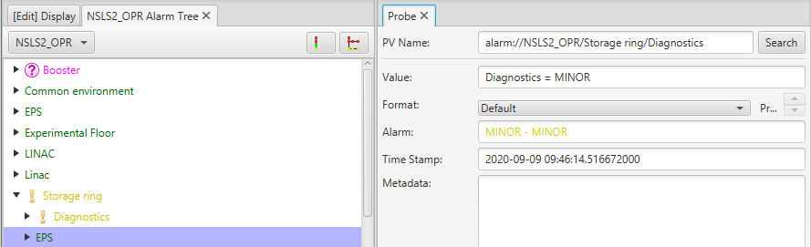
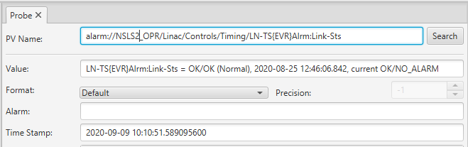

Alarm Datasource¶
Overview¶
The Alarm System allow users to view and handle the alarms triggered by Process Variables (PVs) on front-end computers (IOCs). There are a set of dedicated applications (Alarm tree, table, and panel) which display alarms and alarm related information (like guidance). These applications also provide the ability to take a set of actions needed to effectively handle an alarm.
The alarm datasource provides a subsection of the alarm information and functionality. This makes it possible for user to access beast alarm information of any other cs-studio application. OPI screens can now embed informatino about from the alarm server, like the acknowledgement state of a pv, etc..
PV syntax¶
The standard prefix for the datasource is alarm:// which can be omitted if configured as the default datasource.
alarm pvs can be used to connect to any node or leaf from the alarm tree.
The alarm tree represents the configured hierarchy of the alarm pv’s, the hierarchy consists of multiple
nodes and alarming pv’s
- You can create a alarm channel for any Alarm Trigger PVs or for any Area, System, Subsystem.
# alarm://complete_path_to_area alarm://NSLS2_OPR/Storage ring/Diagnostics # alarm://complete_path_to_system alarm://NSLS2_OPR/Linac/Controls/Timing/LN-TS{EVR}Alrm:Link-Sts
Reading alarm pv’s¶
The alarm:// pvs return a VString describing the alarm state of the associated node or leaf in the alarm tree
e.g.
alarm://NSLS2_OPR/Storage ring/DiagnosticsThe return value is a VString, with the string value describing the alarm state of the node. The Alarm meta data of the pv also matches the alarm state.
{kind=link}
alarm://NSLS2_OPR/Linac/Controls/Timing/LN-TS{EVR}Alrm:Link-StsThe return value is a VString, with the string value describing the alarm state along with a description of the pv’s alarm value if present and its current alarm value. The Alarm meta data of the pv also matches the alarm state.
{kind=link}
Special Fields¶
The alarm pvs have a few additional fields which can be used to access specific attributes of the alarm node/leaf
These fields can be used by appending the following field tag at the end the alarm pv.
e.g.
alarm://NSLS2_OPR/Linac/Controls.stateWriting to alarm pv’s¶
alarm://NSLS2_OPR/SR/Vacuum
acknowledge¶
The alarm pvs can be used to acknowledge or unacknowledge parts of the alarm tree. The alarm pvs accept String, boolean, and Number values which are interpreted as follows:
When writing strings
Acknowledge all alarms associated with the node or leaf of the alarm tree associated with this alarm pv
Unacknowledge all the alarms associated with the node or leaf of the alarm tree associated with this alarm pv
When writing Numbers
Writing any non zero number is treated as an acknowledge while 0 will unacknowledge an alarm
When writing booleans
A “true” value is to acknowledge an alarm while a “false” value will unacknowledge an alarm
enable¶
The alarm pvs can be used to enable or disable parts of the alarm tree. The alarm pvs accept String values which are interpreted as follows:
When writing strings